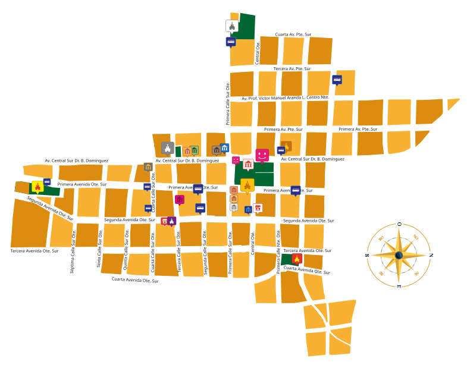

Guía de Puntos Turísticos y Culturales
No se encontraron lugares con ese criterio.
Este mapa todavía no tiene lugares ubicados. Presiona «Ubicar lugares en el mapa» para empezar a marcarlos.
Modo edición activo: da clic sobre el ícono de un lugar en el mapa.
El sistema intenta adivinar de qué lugar se trata usando el color del ícono
(te lo va a mostrar arriba del selector); revisa que sea correcto y confirma.
Entre más lugares marques, más íconos reconocerá solo. Cuando termines, presiona
«Descargar coordenadas» y guarda ese archivo como
data/puntos-mapa.json (reemplazando el que ya existe) para que quede fijo.
